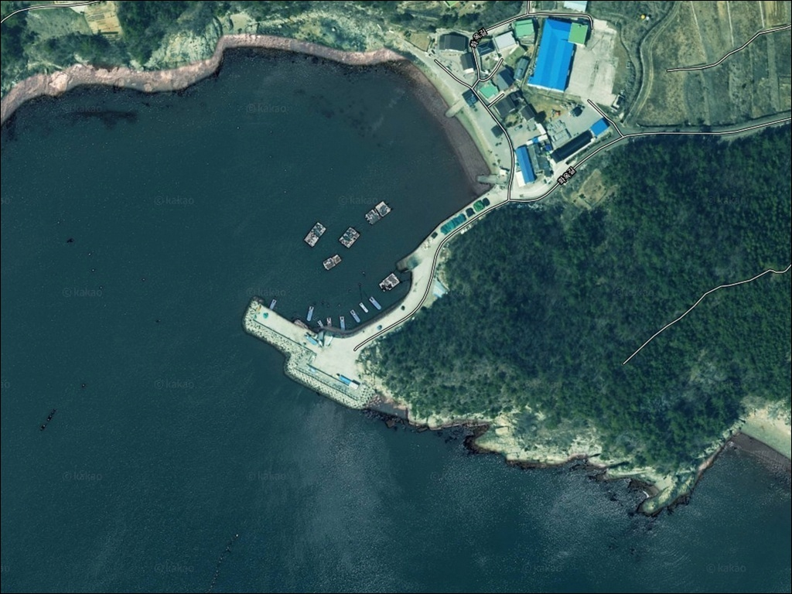
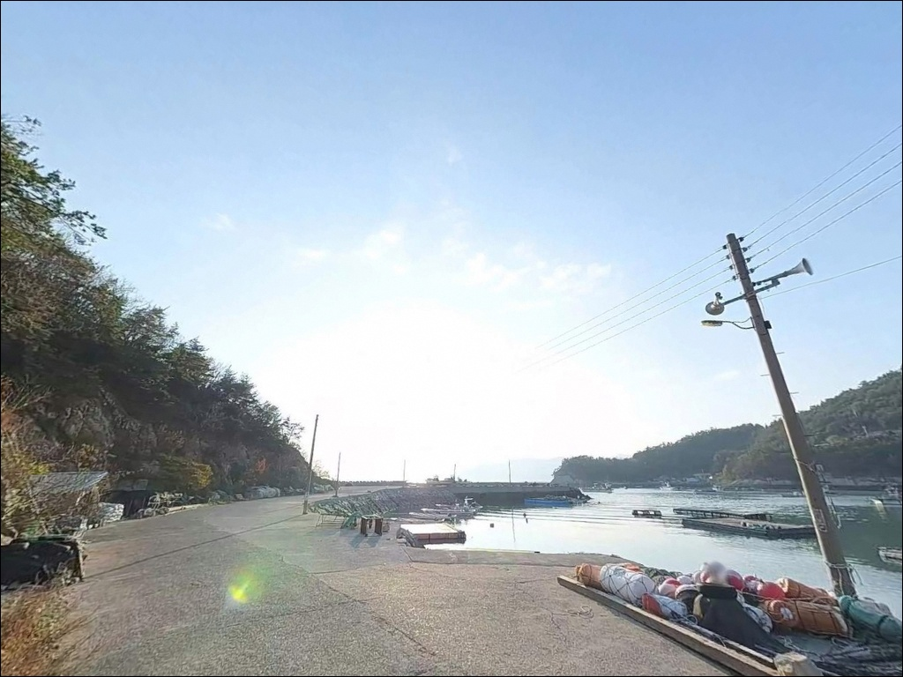
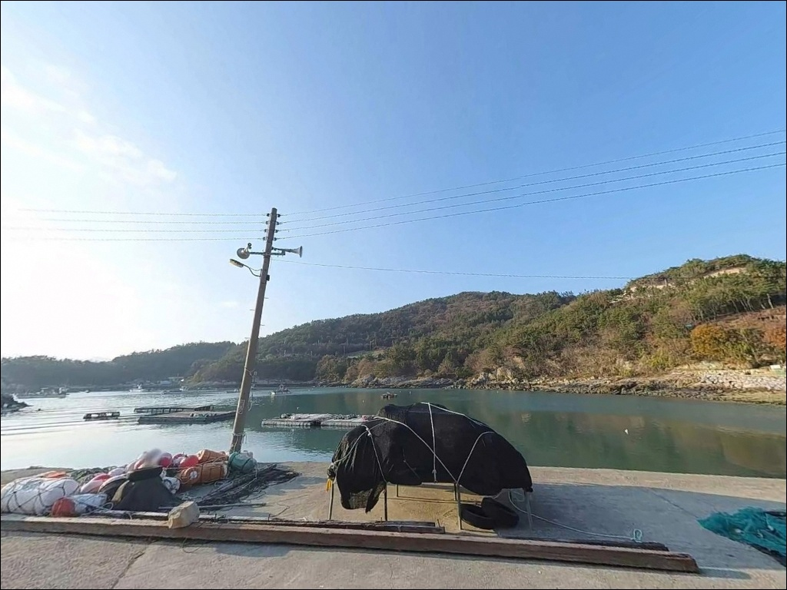
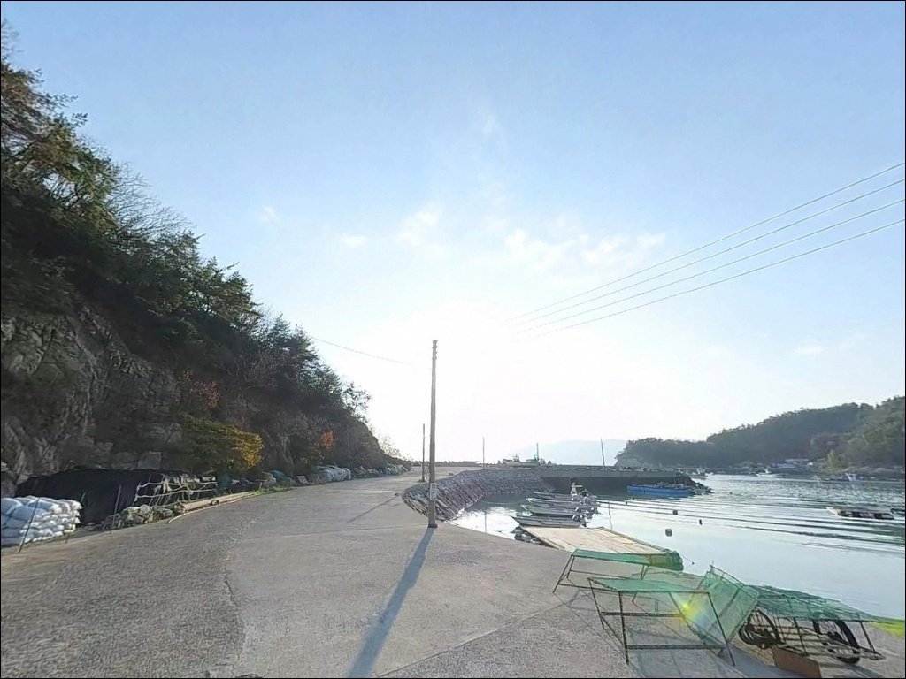
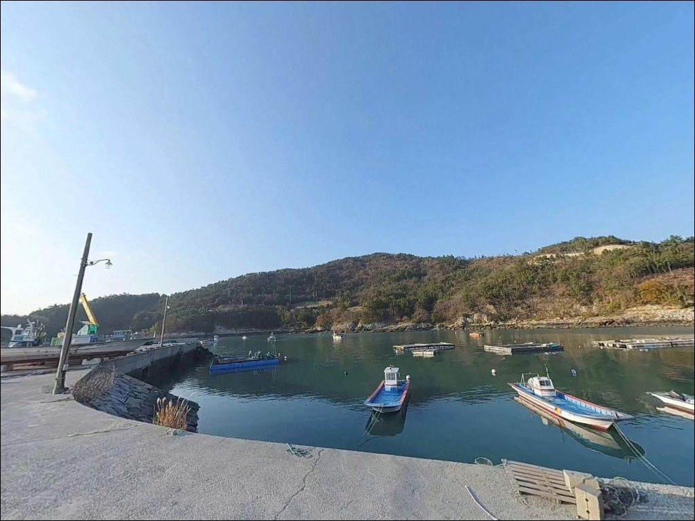
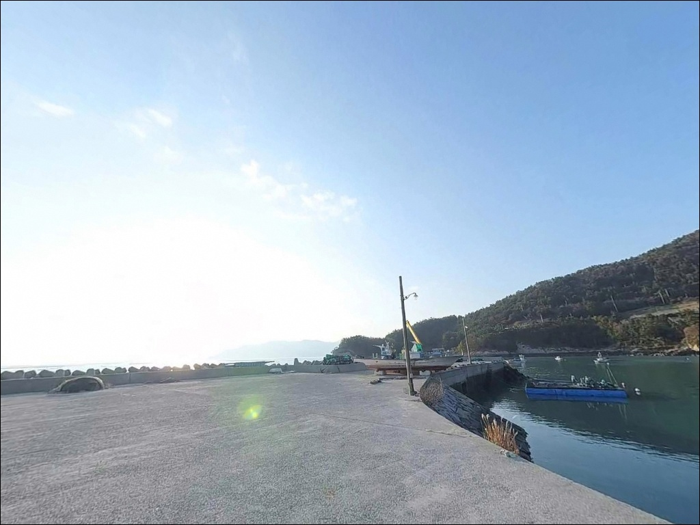
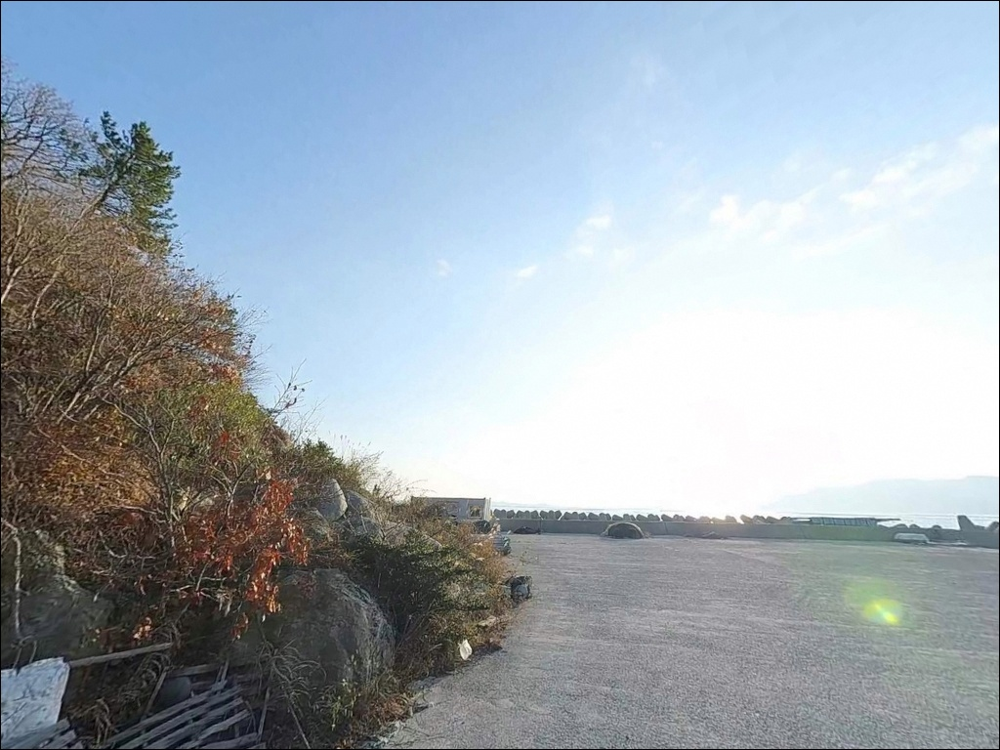
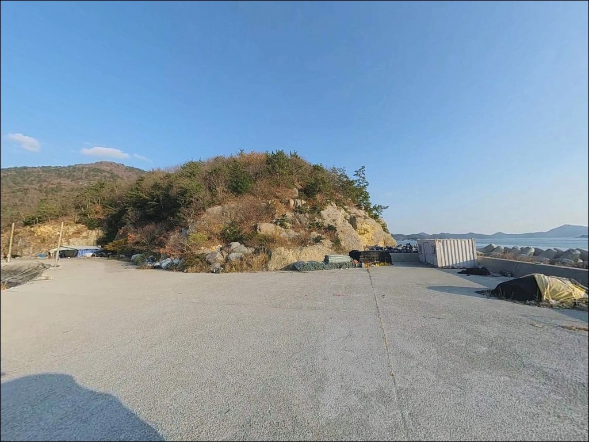
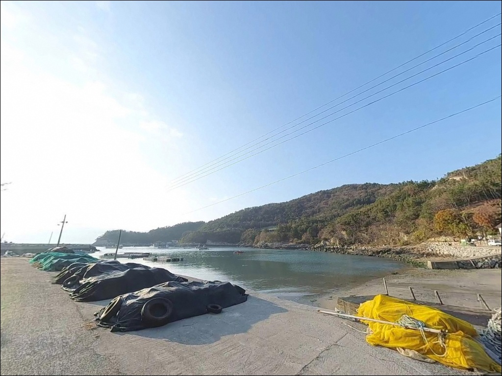

간조 때 외항 수심이 1m 아래로 빠지는 고흥 가화리방파제의 만조 원투낚시
이 페이지에는 광고(제휴 링크 포함)가 있으며, 광고 링크를 통해 구매하면 운영자가 판매 수익 또는 수수료를 받을 수 있습니다. 포인트 사진: 카카오맵 스카이뷰·로드뷰. 이 페이지의 지도·사진 이미지는 카카오맵의 실제 서비스 이미지와 다를 수 있습니다.


포인트 안내
가화리방파제
전남 고흥군 도화면 가화리 산 280-3
간조 전후 시간대에 가화리방파제를 찾으면
외항 수심이 1m 아래로 빠져버려
어떤 채비를 써도 낚시 자리가 성립하지 않습니다.
거금수도 조차가 200cm를 넘는 이 해역에서는
물때 타이밍이 포인트의 성패를 가르는
첫 번째 판단 기준입니다.
전남 고흥군 도화면 가화리,
거금수도와 접한 내만 해안에 자리한
가화리방파제는 도화–녹동 해안도로에서
직접 진입할 수 있는 소형 방파제입니다.
내항은 잔잔한 생활낚시 공간,
외항과 방파제 끝단은 거금수도 조류가 실리는
원투·루어 공략 구간입니다.
이 글은 가화리방파제의
진입 환경, 차박 여건, 물때 판단 기준,
낚시 스타일별 지형 조건에 집중합니다.
조황 단정이나 특정 어종 보장은
이 글의 범위에 포함되지 않습니다.

1. 진입 동선과 차량 접근 조건
도화–녹동 해안도로는 2차선으로 정비된
포장도로가 가화리 연안까지 이어집니다.
방파제 초입까지 차량이 진입할 수 있는
포장 진입로가 연결되어 있어,
접근성 자체는 도화면 연안 방파제 중
무난한 편에 속합니다.
해안도로 구간이 직선 위주라
소형차부터 SUV까지 회차에 어려움은 없습니다.
방파제 앞 공터를 이용하면
방향 전환도 가능한 구조입니다.
다만 카라반이나 대형 캠핑카는
진입 전 현장 도로 폭을 위성지도로
먼저 확인하는 편이 안전합니다.
주차는 방파제 진입부 공터와
해안도로 갓길 여유 공간을 활용합니다.
소형차 기준 2~3대 수준의 공간이며,
어선 접안 동선을 비워두는 것이
기본 매너입니다.

2. 차박 환경과 야간 체류 여건
가화리방파제 인근은 해안도로를 따라
민가와 상업 시설이 점점이 분포하는 구조입니다.
완전한 고립형 차박지라기보다
해안도로 노상 차박에 가까운 분위기입니다.
민가 불빛과 도로 조명이 일부 영향을 미쳐
야간 완전 암흑 환경은 아닙니다.
내만형 구조 특성상 외해 대비 파도 영향이 적어
야간 체류 안정성은 비교적 양호한 편입니다.
낚시를 마치고 짧게 하룻밤 머무는 용도로는
나쁘지 않지만,
주차 공간이 좁아 차박을 메인으로
계획한다면 현장 확인이 먼저입니다.
방파제가 마을 접안 시설인 만큼
야간에도 어선 출입이 이루어질 수 있습니다.
주차 위치를 정할 때 어선 동선을 먼저 파악하고,
야간 소음과 조명 사용에도
주변 민가를 배려하는 태도가 필요합니다.


3. 주변 편의시설 및 인프라 현황
방파제 인근 반경 1km 내에서
별도 편의시설을 기대하기는 어렵습니다.
다만 가화보건진료소가 개방화장실로 등록되어 있어
차량 이동으로 짧은 거리 내에서
이용할 수 있습니다.
도화면 소재지 방향으로 차로 5분 안팎 거리에
농협마트와 주유소, 소규모 상점이 위치합니다.
식수, 얼음, 낚시 소품은
도화면 생활권에서 미리 갖추고
포인트로 이동하는 편이 현실적입니다.
응급 상황 대비용 비상약품과 예비 배터리는
출발 전에 반드시 챙겨야 합니다.
고흥 읍내까지 거리가 상당하므로
기본 자급 체제를 갖추고 진입하는 것이
기본 준비입니다.

4. 방문 전 반드시 확인해야 할 사항
가화리방파제 방문 전 가장 먼저 확인할 것은
물때입니다.
거금수도 해역은 조차가 200cm를 넘는 구간으로,
간조 전후 2시간은 외항 수심이 1m 이하로 낮아져
사실상 낚시가 어렵습니다.
바다타임에서 도화면 기준 물때를 확인하고
만조 전후 2~3시간을 중심으로
출발 시각을 잡는 것이 기본 전략입니다.
거금수도 조류는 창조·낙조 모두
흐름이 분명하게 형성됩니다.
최대 3kn급 조류가 실리는 타이밍에는
봉돌 무게를 올리거나 정조 이후를 기다리는
판단이 필요합니다.
야간 낚시 시 헤드랜턴은 필수이며,
방파제 끝단 낙상에도 각별히 주의해야 합니다.

5. 거금수도 인접 방파제, 지형이 만드는 낚시 조건
가화리방파제는 내항과 외항의 성격이
뚜렷하게 나뉘는 구조입니다.
내항 쪽은 바닥이 비교적 완만하고
수심도 얕아 잔잔한 생활낚시 공간입니다.
외항과 방파제 끝단 구간은
만조를 기준으로 수심이 더 확보되며
거금수도 조류가 직접 닿는 구간입니다.
바닥은 펄과 모래, 해초가 섞인
남해 내만형 전형 구조입니다.
완경사 지형으로 수심 변화가 급하지 않아
원투 채비를 멀리 보낸 뒤
천천히 끌어오는 방식이 잘 맞습니다.
방파제 콧부리와 끝단 주변은
조류 소통이 원활한 구간으로
루어 반응이 살아날 수 있는 자리입니다.
내만 구조라 파도 영향은 적지만
거금수도 조류 변화는 명확합니다.
조류가 강하게 흐르는 타이밍에는
채비가 쉽게 떠내려가므로
봉돌 무게를 충분히 올려야 합니다.
가기 전 도화면 일대 최신 조황은
꼭 검색해 보시기 바랍니다.


6. 이 포인트 지형에 어울리는 낚시 스타일
원투낚시는 이 포인트에서
가장 기본이 되는 방식입니다.
외항 쪽으로 멀리 채비를 던져
수심 변화 구간을 노리는 방식이 잘 맞습니다.
들물 이후 만조에 접어드는 시간대가
외항 수심이 충분히 확보되는 타이밍으로,
도다리, 붕장어류를 기대해 볼 수 있는 구조입니다.
루어낚시도 이 포인트에 어울리는 방식입니다.
방파제 콧부리와 외항 방향을 노리는
에깅 운용이 가능하며,
거금수도 권역 전반에서
갑오징어는 연안 주대상어로 꼽히는 어종입니다.
발판이 낮고 수면과 거리가 가까워
채비 컨트롤이 수월한 편입니다.
찌낚시는 내항 석축 주변과
방파제 외항 난간 구간에서
소형 반유동 채비로 운용할 수 있습니다.
야간 조명이 있는 구간이라면
불빛 주변을 노리는 방식도
거금수도 내만 방파제에서 통하는 패턴입니다.

7. 대안 포인트와 플랜 B 동선
가화리방파제 공간이 여의치 않거나
조류 타이밍을 놓쳤을 때
첫 번째 대안은 발포방파제입니다.
같은 도화면 내 거금수도 영향권 해역이며,
바다타임에 물때 포인트 정보가 등록되어 있어
출조 전 조류 정보 확인이 가화리보다
용이한 구조입니다.
수심 확보가 더 필요하거나
어종 다양성을 노리고 싶다면
약 15~20km 거리의
녹동항 인근 방파제를 대안으로 둘 수 있습니다.
낚시 전문점이 있어 미끼와 밑밥 구입이 가능하고
정보 접근성이 이 권역에서 가장 높습니다.
같은 해역 라인에서 조류를 더 살리고 싶다면
풍남방파제·오마방조제 일대도
동일 생활권 대체 포인트로 활용할 수 있습니다.
가화리방파제에서 만족스럽지 않을 때
이 세 곳을 순서대로 이동하는 동선이
도화면 일대에서 가장 효율적입니다.

물때만 맞추면
가화리방파제는 조용하고 실속 있는 자리입니다
원투낚시나 에깅을 즐기는 낚시인이라면
가화리방파제의 지형 구조는
잘 맞는 편입니다.
거금수도 조류가 실리는 외항과
잔잔한 내항이 분리된 구조라
낚시 스타일에 따라 자리 선택의 폭이 있습니다.
반면 물때 확인 없이 간조 타이밍에 도착하거나
대형 차량으로 공간 확보를 기대하고 간다면
기대와 다른 현장을 맞닥뜨릴 수 있습니다.
만조 전후 타이밍 계산, 소형 차량 기준 주차 확인,
자급 준비,
이 세 가지를 갖추고 간다면
도화면 연안에서 조용하고 실속 있는
출조가 될 수 있는 포인트입니다.
편의시설이 없는 조용한 해안 마을에서
거금수도 조류를 끼고 하룻밤 머무는 차박 여행자라면,
발포방파제와 묶어 이동하는 동선이
낚시와 차박을 함께 즐기기에
가장 현실적인 구성입니다.